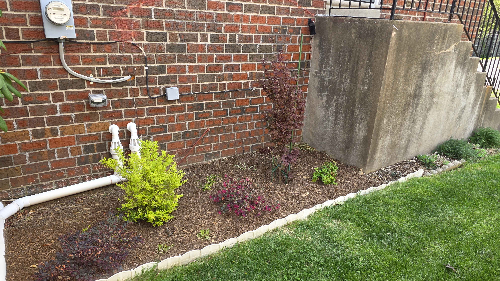
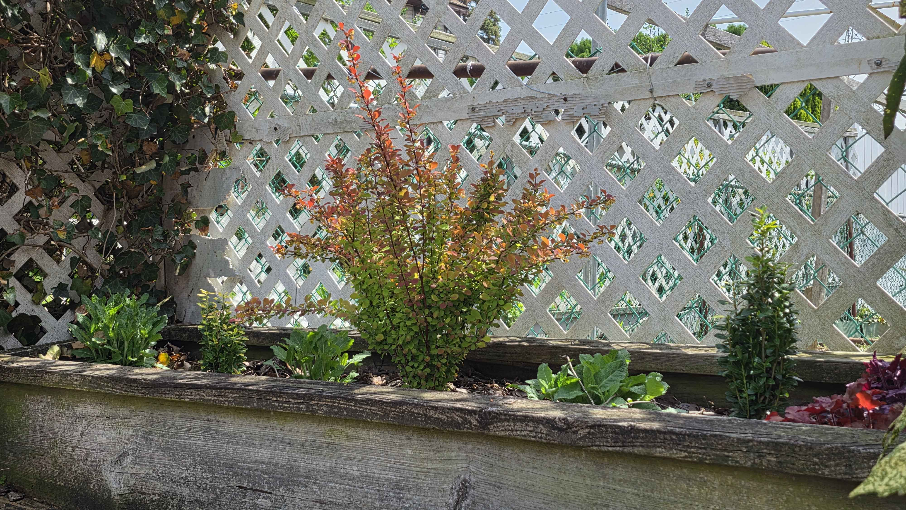
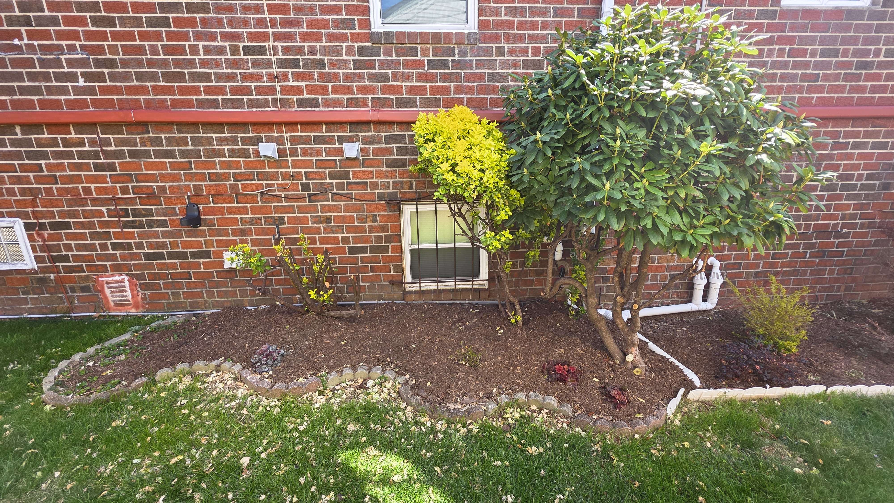
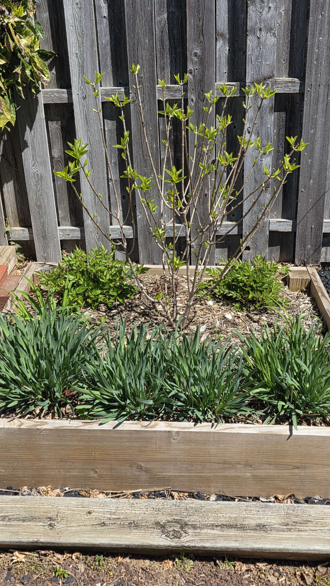

Plant Progress · Garden Beds
Garden Beds
A working record of the garden's mixed beds — the long side-house foundation line and the layered perennial bed in back — tracked together because they share plants, light, and design decisions.
Side-house foundation bed
April 16, 2026
Another angle with Shaina in the mix
This angle opens the whole bed up a little more, with the Shaina Japanese maple reading clearly as the vertical anchor while the ligustrum and loropetalum fill the lower and left side. The brick wall and utility lines make the bed feel tight, but the plants are already softening the geometry.
The maple is doing the upright work; the rest is building the color field around it.

- Shaina maple is visible as the central upright feature
- Sunshine ligustrum still reads bright in the foreground
- loropetalum and other low shrubs are building the edge layer
What's already working
The rhododendron already owns the right side of the bed, and the gold euonymus gives you one bright accent. The space between them still has room to become more intentional, but the structure is there.

April 12, 2026
Planting direction
This bed wants layering more than it wants more shrubs. The big rhododendron on the right already acts as the anchor, and the gold euonymus gives you a bright focal note. From here, the cleanest move is to add one deeper contrasting shrub and then repeat a lower plant across the front so the whole bed starts to read as one composition instead of separate islands.
The easiest way to make this bed feel finished is contrast plus repetition — one dark shrub, one bright accent, one repeating front layer.

- keep the rhododendron as the right-side anchor
- keep the gold euonymus as the yellow/chartreuse accent
- add one purple loropetalum for contrast, not multiple bright shrubs
- use heuchera in grouped drifts along the front and in gaps
- if you want another texture layer, add hosta or astilbe in the shadier sections
- skip loading the middle with too many medium shrubs — the bed is too shallow for that
Mixed perennial bed
April 16, 2026
Orange Rocket barberry in the backyard bed
The Orange Rocket barberry is settling into the bed with salvia, heuchera, and the nearby holly making a crisp low layer around it. This is one of those plantings that looks small from a distance but really holds the composition together once you get closer.
Sharp color, tight form, and just enough contrast to keep the whole bed from going flat.

- Orange Rocket barberry is the upright focal point
- salvia and heuchera soften the front edge
- holly gives the bed a stronger evergreen anchor
First layer first
This bed reads in stages right now. The ornamental onions are carrying the front, the astilbe is pushing behind them, and the hydrangea is just beginning to leaf out in the center while the daylilies are only barely arriving at the edges.
April 12, 2026
Spring in waves
The ornamental onions are carrying this bed right now, already up in dense blue-green clumps and giving the whole front edge a strong shape. Behind them, the astilbe is pushing fresh spring growth, while the hydrangea in the center is just beginning to leaf out along its bare branching frame. The daylilies are later to the party here, only just starting to show at the right and left edges.
Not full yet, but already well-composed — the kind of spring moment that promises a lot without needing to bloom yet.
- ornamental onions are the dominant front layer
- astilbe is emerging behind them
- hydrangea is leafing out in the center
- daylilies are just beginning at the edges